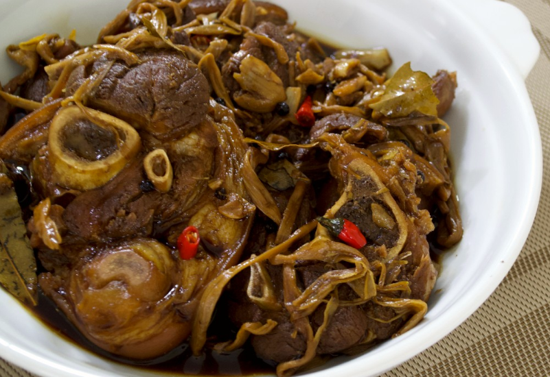

adobo na pata

Ingredients
- 3 lbs ham hock pata, sliced into individual servings
- 5 pieces dried bay leaves
- 1 tablespoon whole peppercorn
- 6 cups water
- 6 tablespoons soy sauce
- 6 tablespoons white vinegar
- 1/2 beef or pork cube
- 1 head garlic crushed
- 1 teaspoon onion powder
- 1 tablespoon granulated white sugar
- Salt to taste optional
- 3 tablespoons cooking oil
Instructions
- Boil 8 cups of water in a large cooking pot. Add the ham hock (pata). Continue to boil for 60 minutes. Discard the water and set the ham hock aside.
- Heat the oil on a large cooking pot. You may use the same pot that you had for the pata.
- Add the crushed garlic and cook until brown. Add the peppercorn and bay leaves and cook for 30 seconds.
- Put the boiled ham hock in the cooking pot and then pour-in the water. Let boil. Cover and simmer for 15 minutes.
- Add the beef cube and soy sauce. Cook for 40 minutes in low heat. Add more water if needed.
- Add the onion powder, vinegar, and sugar. Let the mixture boil. Stir and cover the cooking pot. Continue to simmer for 20 minutes. Add more water if necessary. Make sure that there is enough sauce left.
- Add salt (optional). Serve.
- Share and enjoy!